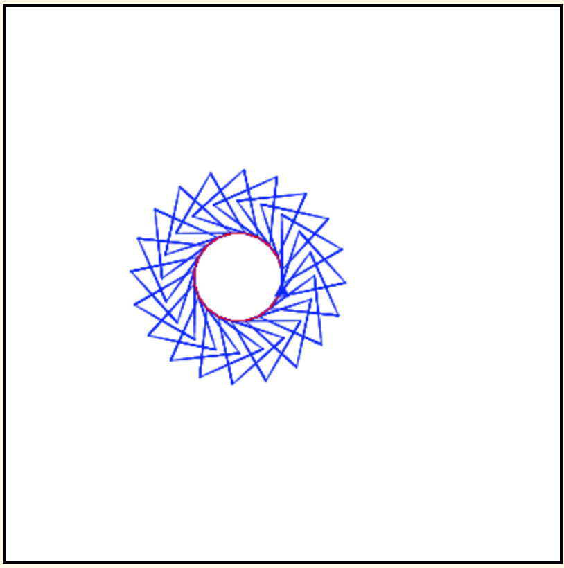

17.8. Making Patterns within Patterns¶
We now know the pattern for creating any polygon. We can wrap that pattern in another loop to create spirograph like patterns. The example below uses pentagons, but you can use other polygons instead.
Note
The outer for loop in the code below on line 8 executes 20 times and the inner for loop on line 13 executes 5 times for each of the outer loop values, 5 times when the outer loop value is 0, 5 times when the outer loop value is 1, 5 times when the outer loop value is 2, and so on. The inner loop is executed a total of 20 * 5 = 100 times. The turtle can take a long time to finish drawing this pattern. Normally code in the browser is limited to only running in 10 seconds or less. But, we can use the sys library (short for system) setExecutionLimit(milliseconds) procedure which will let the code run for up to the specified number of milliseconds. One second is 1,000 milliseconds, so 50,0000 milliseconds is 50 seconds.
Run the code to see what it draws.
By setting the pen color differently, we can distinguish the part that draws the shape, from the part that draws between the shapes.
Run the code to see what it draws.
You can use the coloring in the picture below to help you figure out the correct order of the lines below.
There is a way of arranging the statements below such that this image is created. The turtle will draw many triangles. Move the needed pieces of the program from the left into the space on the right. Indent lines as needed.
{kind=link}
You can use the coloring in the picture below to help you figure out the correct order of the lines below.
There is a way of arranging the statements below such that this image is created. The turtle will draw many triangles. Move the needed pieces of the program from the left into the space on the right. Indent lines as needed.

The following example has 4 errors. Can you fix the errors so that the code compiles and runs?
The following example has 4 errors. Can you fix the errors so that the code compiles and runs?